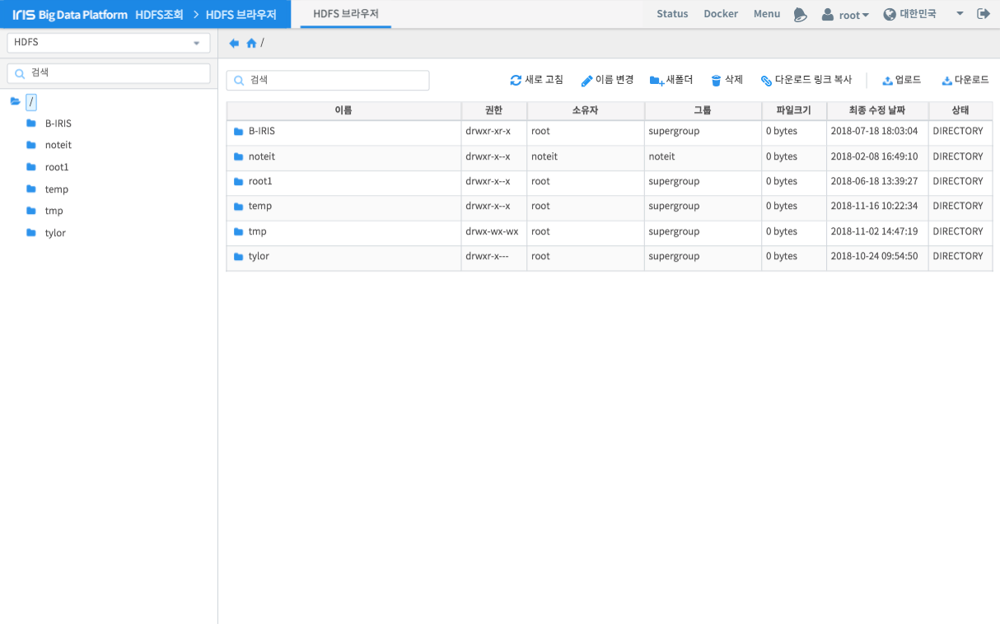

파일 탐색¶
HDFS 브라우저 기능은 HDFS를 사용자가 UI로 쉽게 사용하기 위한 목적으로 사용됩니다. 일반적으로 파일 브라우저들이 제공하는 기능들을 제공하고 있습니다.
번호 |
구분 |
설명 |
1 |
트리뷰 |
생성되어 있는 폴더를 트리 구조로 표시합니다. 특정 폴더를 더블 클릭하면 하위 폴더를 표시하거나, 해당 폴더에 내용을 11)파일 목록에 표시합니다. |
2 |
경로 표시 및 이동 |
현재 선택된 폴더의 경로를 표시하고, 버튼에 따라 이전 폴더 혹은 최상위 폴더로 이동합니다. |
3 |
검색 바 |
텍스트를 입력하여 목록에서 원하는 항목만 골라볼 수 있습니다. |
4 |
새로고침 |
클릭하면 11)목록의 내용을 갱신합니다. |
5 |
이름 변경 |
선택한 파일 혹은 폴더의 이름을 변경합니다. |
6 |
새 폴더 |
현재 경로에 새로운 폴더를 생성합니다. |
7 |
삭제 |
선택한 파일 혹은 폴더를 제거합니다. |
8 |
다운로드 링크 복사 |
선택한 파일의 다운로드 주소를 클립보드에 복사합니다. |
9 |
업로드 |
현재 경로에 사용자 로컬 PC의 파일을 업로드합니다. |
10 |
다운로드 |
선택한 파일을 사용자 로컬 PC로 다운로드합니다. |
11 |
파일 목록 |
현재 경로에 존재하는 파일 및 폴더 정보를 출력합니다. |